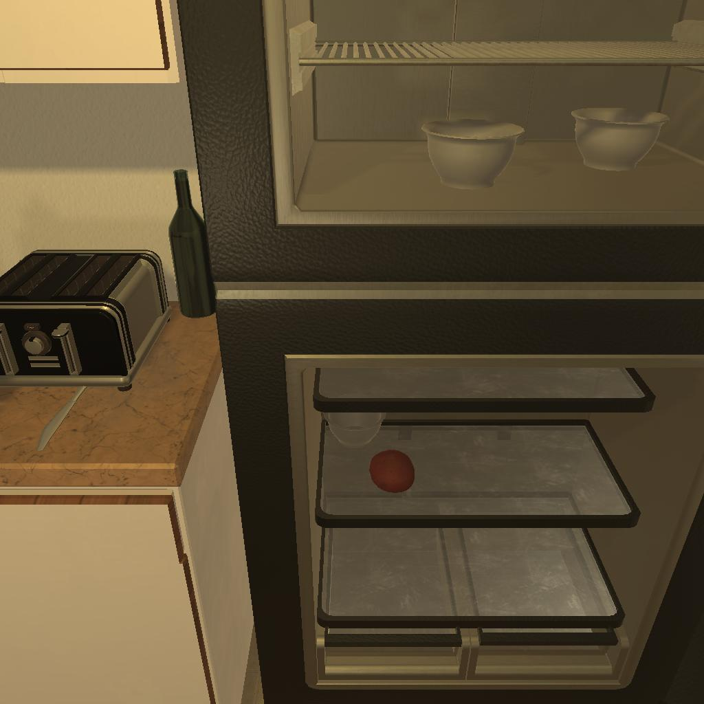

---------------------------------------------------------task: 14---------------------------------------------------------
--------------------------------------------------------------------------------------------------------------------------------------------------------------------
--------------------------------------------------------------------------------------------------------------------------------------------------------------------
Step:--------------------------------------------------------------------------2-------------------------------------------------------------------------------
----------------------------------------
VLM Prompt:
**Task**
Please perform as an embodied AI agent. Our final objective is to cool some apple and put it in countertop. Below is the plan for completing the task, the current observation, alongside historical data and admissible actions for the next step. Please determine the best action for the next step!
**Plan**
Below is a detailed step-by-step plan to complete the task.
1. Find an apple.
2. Pick up the apple.
3. Find a fridge.
4. Cool the apple with the fridge.
5. Find a countertop.
6. Place the cooled apple on the countertop.
**Current Observation**
Displayed is an image capturing the current position of the agent.
Objects in The Image: ['refrigerator', 'tomato', 'wine bottle', 'toaster', 'cabinet', 'bowls']
**History Information**
Displayed are the previous observations with their corresponding actions.
State 0:
No history.
State 1:
1. Step Index in the Plan: 1
2. Objects: Kitchen Sink, Faucet, Tap, Curtains, Window, Countertop, Drinking Glass
3. Action: go to fridge 1
State 2:
1. Step Index in the Plan: 4
2. Objects: Refrigerator, Toaster, Countertop
3. Action: open fridge 1
**Admissible Actions**
(1): go to microwave 1
(2): go to countertop 1
(3): go to cabinet 1
(4): go to diningtable 1
(5): go to drawer 1
(6): go to sink 1
(7): go to cabinet 2
(8): go to cabinet 3
(9): go to sinkbasin 1
(10): go to cabinet 4
(11): go to cabinet 5
(12): go to drawer 2
(13): go to countertop 2
(14): go to toaster 1
(15): go to cabinet 6
(16): go to stoveburner 1
(17): go to cabinet 7
(18): go to stoveburner 2
(19): go to stoveburner 3
(20): go to stoveburner 4
(21): go to drawer 3
(22): go to cabinet 8
(23): go to cabinet 9
(24): go to cabinet 10
(25): go to coffeemachine 1
(26): go to cabinet 11
(27): go to garbagecan 1
(28): close fridge 1
(29): take bowl 1 from fridge 1
(30): take bowl 2 from fridge 1
(31): take winebottle 1 from fridge 1
(32): take bowl 3 from fridge 1
(33): take potato 1 from fridge 1
(34): take butterknife 1 from fridge 1
**Analysis Guideline**
1. Analyze the history and current observation, and then determine our current step in the plan and our current place.
2. List all visible objects related to the task in the current observation, without summarizing any as "various items."
3. Analyze the objects in the current observation based on the history and the requirements for the current step, and then determine if we can complete the step with the current observation.
4. Analyze and decide on the most appropriate action to take.
5. Summarize the analysis using the following format: "Analysis: [The summarization of the analysis], The Most Appropriate Action: (i which is the integer.): [Selected action]"
**Notes**
1. We must complete each step of the plan in order and cannot skip steps when the previous ones are not finished.
2. For "Go to" actions listed as "go to xxx [n]", interpret this as there are n distinct actions available: "go to xxx 1", "go to xxx 2", ..., "go to xxx n". Select one specific action from these options instead of using "go to xxx [n]".
3. If receptacles such as drawers, cabinets, and so forth are closed in the current observation, we may try to open them.
4. Pay attention to synonyms and ensure clarity in the terms used.
5. We must determine and provide the single action which must be in the **Admissible Actions**.
6. If there is no history available, we are at the first step and the current place is "Unknown".
**Answer**
Please select the most suitable action by following the **Analysis Guideline**, keeping the above **Notes** in mind.
----------------------------------------
----------------------------------------
VLM Response:
Analysis: Based on the current observation and history information, the agent is at step 4 in the plan, which is to cool the apple with the fridge. The fridge has already been opened as per the historical action. The current observation shows an open refrigerator with a tomato visible on one of the shelves; however, there is no apple visible inside the fridge. Since the current objective is to cool the apple, and the apple is not present in the current view, the apple may have already been placed in the fridge prior to this observation. Without the visibility of the apple, we cannot confirm if it is being cooled or if it has already been cooled. The action should now be to close the fridge if the apple has been placed inside and is assumed cooled, or to locate the apple if it is not in the fridge. However, none of the admissible actions allow for taking or checking the apple, and none indicates the apple has been cooled. Therefore, the most appropriate action is to close the fridge, assuming the apple has been placed inside and has been cooled.
The Most Appropriate Action: (28): close fridge 1
----------------------------------------
----------------------------------------
>>> Refine VLM Response and Get Pure Action: close fridge 1
----------------------------------------
-----------------------------------------------------------------
Running time: 11.235982179641724 seconds
Total Money: 0
-----------------------------------------------------------------
-----------------------------------------------------------------
Summarization Prompt:
**Context**
Analysis: Since there is no history information, we are at the first step in the plan, which is to find a statue. The current place is unknown. In the current observation, we see a floorlamp next to an armchair with a small table that has a small object on it, which could potentially be the statue we are looking for. Since the plan requires us to find a statue first and it appears there might be one on the table next to the armchair, we should investigate this object to determine if it is the statue we need.
The Most Appropriate Action: (1): go to armchair 1
**Summary**
1. Step Index in the Plan: 1
2. Objects: Floorlamp, Armchair, Small Table, Small Object (potential statue)
3. Action: go to armchair 1
**Context**
Analysis: Based on the current observation and history information, the agent is at step 4 in the plan, which is to cool the apple with the fridge. The fridge has already been opened as per the historical action. The current observation shows an open refrigerator with a tomato visible on one of the shelves; however, there is no apple visible inside the fridge. Since the current objective is to cool the apple, and the apple is not present in the current view, the apple may have already been placed in the fridge prior to this observation. Without the visibility of the apple, we cannot confirm if it is being cooled or if it has already been cooled. The action should now be to close the fridge if the apple has been placed inside and is assumed cooled, or to locate the apple if it is not in the fridge. However, none of the admissible actions allow for taking or checking the apple, and none indicates the apple has been cooled. Therefore, the most appropriate action is to close the fridge, assuming the apple has been placed inside and has been cooled.
The Most Appropriate Action: (28): close fridge 1
Please summarize the context by following above examples when providing the summary, and ensure that only the summary is included, without any extra explanation.
**Summary**
-----------------------------------------------------------------
-----------------------------------------------------------------
Summarization Response:
1. Step Index in the Plan: 4
2. Objects: Refrigerator (open), Tomato
3. Action: close fridge 1
-----------------------------------------------------------------
-----------------------------------------------------------------
Text Observation:You close the fridge 1.
-----------------------------------------------------------------
UNSUCCEED